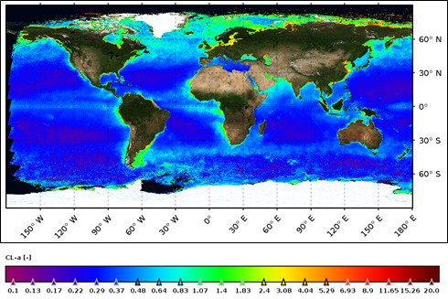

EOS-06 ನಲ್ಲಿನ OCM ಸಂವೇದಕವು ಜಾಗತಿಕ ಮಟ್ಟದಲ್ಲಿ ಫೈಟೊಪ್ಲಾಂಕ್ಟನ್ ಸಾಂದ್ರತೆಯನ್ನು ಸೆರೆಹಿಡಿಯುತ್ತದೆ

EOS-06 ನ ಓಷನ್ ಕಲರ್ ಮಾನಿಟರ್ (OCM) ಸಂವೇದಕವು 2 ದಿನಗಳ ಆವರ್ತನದಲ್ಲಿ ಜಾಗತಿಕ ಮಟ್ಟದಲ್ಲಿ ಕ್ಲೋರೊಫಿಲ್-ಎ (Chl-a) ಸಾಂದ್ರತೆಯನ್ನು ಸೆರೆಹಿಡಿಯುತ್ತದೆ.
ಕೆಳಗಿನ ಚಿತ್ರವು ಜನವರಿ-ಡಿಸೆಂಬರ್ 2024 ರ ಅವಧಿಗೆ ಡೇಟಾವನ್ನು ಬಳಸಿಕೊಂಡು 1km ರೆಸಲ್ಯೂಶನ್ನಲ್ಲಿ ರಚಿಸಲಾದ ಜಾಗತಿಕ ಉತ್ಪನ್ನವನ್ನು ತೋರಿಸುತ್ತದೆ.
| ಸಾಗರದ ಬಣ್ಣ ಅವಲೋಕನಗಳು ಜಾಗತಿಕ ಮಟ್ಟದಲ್ಲಿ ಸಾಗರಗಳ ಜೈವಿಕ-ಭೂ-ರಾಸಾಯನಿಕ ವ್ಯತ್ಯಾಸದ ಮೇಲೆ ಅಮೂಲ್ಯವಾದ ಮಾಹಿತಿಯನ್ನು ಸಂಗ್ರಹಿಸಲು ಸಹಾಯ ಮಾಡುತ್ತದೆ.